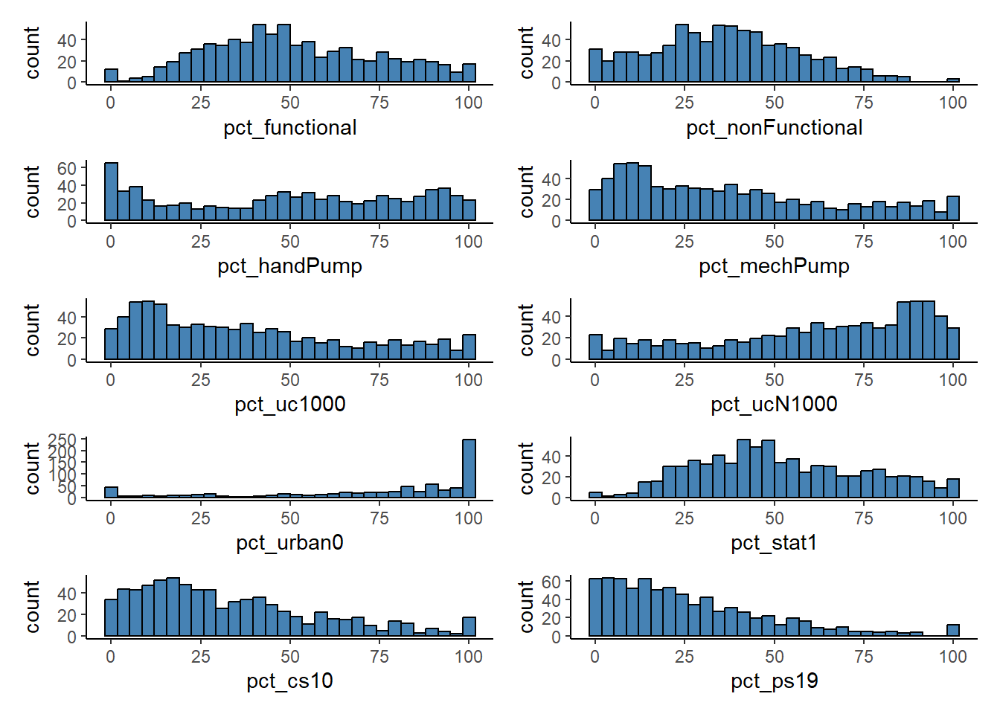
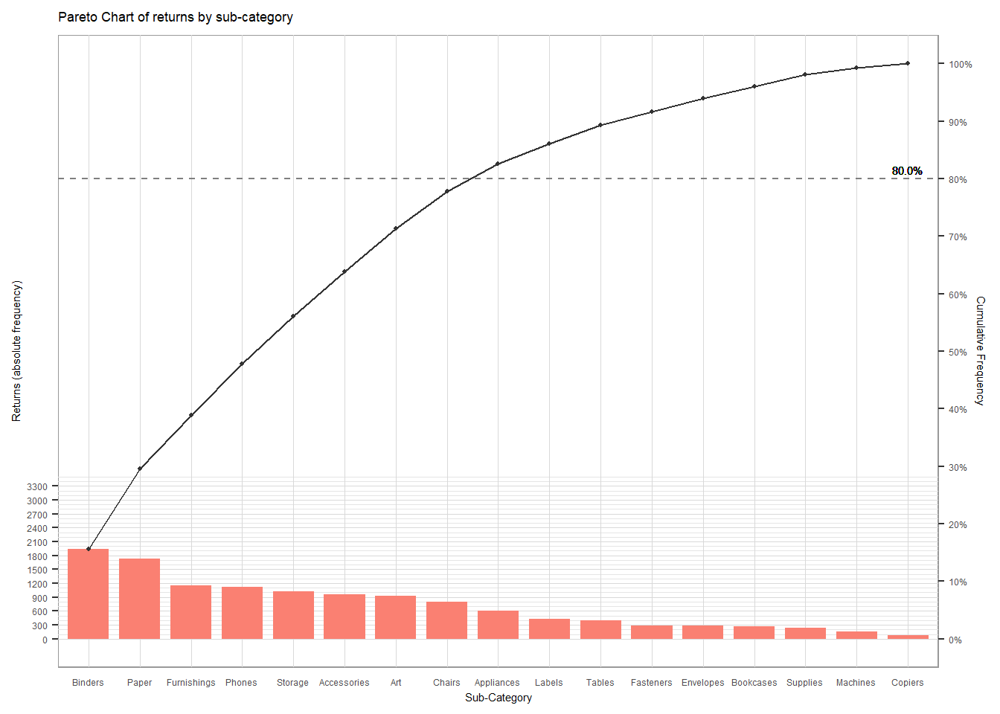

Show the code
pacman::p_load(tidyverse, readxl, knitr, plotly, skimr, questionr, funModeling)December 28, 2022
This study explores the Pyramid chart using ggplot2 and supporting R packages.
The functions in ggplot2 transform the secondary axis one-to-one based on the primary axis. Hence, the scale of the secondary axis plot will not be accurate.
Resolve by transforming the secondary axis with a coefficient to match the scale with the primary axis.
The ggplot2 can only produce static charts.
Resolve by using plotly functions to allow readers to hover over the chart to reveal details for each plotted point.
Usage of the code chunk below :
p_load( ) - pacman - to load packages into R environment. This function will attempt to install the package from CRAN or pacman repository list if it is not installed.
Remarks :
sf, tidyverse, questionr, janitor, psych, ggplot2, gcookbook, tmap, ggpubr, egg, corrplot, gtsummary, regclass, caret, heatmaply, ggdendro, cluster, factoextra, spdep, ClustGeo, GGally, skimr, stringr, funModeling, knitr, caTools, viridis, rgeoda, cowplot, patchwork.
Alternate code chunk -
R packages and functions used in this exercise :
ggplot2 :
This study will be based on Tableau’s fictatious data set -
Two (2) steps : import and inspect imported data set.
Usage of the code chunk below :
read_xls( ) - readxl - to read excel into a tibble.
problems( ) - readr - to reveal any parsing errors when importing the Excel file.
| Name | orders |
| Number of rows | 9994 |
| Number of columns | 21 |
| _______________________ | |
| Column type frequency: | |
| character | 13 |
| numeric | 6 |
| POSIXct | 2 |
| ________________________ | |
| Group variables | None |
Variable type: character
| skim_variable | n_missing | complete_rate | min | max | empty | n_unique | whitespace |
|---|---|---|---|---|---|---|---|
| Order ID | 0 | 1 | 14 | 14 | 0 | 5009 | 0 |
| Ship Mode | 0 | 1 | 8 | 14 | 0 | 4 | 0 |
| Customer ID | 0 | 1 | 8 | 8 | 0 | 793 | 0 |
| Customer Name | 0 | 1 | 7 | 22 | 0 | 793 | 0 |
| Segment | 0 | 1 | 8 | 11 | 0 | 3 | 0 |
| Country/Region | 0 | 1 | 13 | 13 | 0 | 1 | 0 |
| City | 0 | 1 | 4 | 17 | 0 | 531 | 0 |
| State | 0 | 1 | 4 | 20 | 0 | 49 | 0 |
| Region | 0 | 1 | 4 | 7 | 0 | 4 | 0 |
| Product ID | 0 | 1 | 15 | 15 | 0 | 1862 | 0 |
| Category | 0 | 1 | 9 | 15 | 0 | 3 | 0 |
| Sub-Category | 0 | 1 | 3 | 11 | 0 | 17 | 0 |
| Product Name | 0 | 1 | 5 | 127 | 0 | 1849 | 0 |
Variable type: numeric
| skim_variable | n_missing | complete_rate | mean | sd | p0 | p25 | p50 | p75 | p100 | hist |
|---|---|---|---|---|---|---|---|---|---|---|
| Row ID | 0 | 1 | 4997.50 | 2885.16 | 1.00 | 2499.25 | 4997.50 | 7495.75 | 9994.00 | ▇▇▇▇▇ |
| Postal Code | 11 | 1 | 55245.23 | 32038.72 | 1040.00 | 23223.00 | 57103.00 | 90008.00 | 99301.00 | ▆▃▃▅▇ |
| Sales | 0 | 1 | 229.86 | 623.25 | 0.44 | 17.28 | 54.49 | 209.94 | 22638.48 | ▇▁▁▁▁ |
| Quantity | 0 | 1 | 3.79 | 2.23 | 1.00 | 2.00 | 3.00 | 5.00 | 14.00 | ▇▅▁▁▁ |
| Discount | 0 | 1 | 0.16 | 0.21 | 0.00 | 0.00 | 0.20 | 0.20 | 0.80 | ▇▆▁▁▁ |
| Profit | 0 | 1 | 28.66 | 234.26 | -6599.98 | 1.73 | 8.67 | 29.36 | 8399.98 | ▁▁▇▁▁ |
Variable type: POSIXct
| skim_variable | n_missing | complete_rate | min | max | median | n_unique |
|---|---|---|---|---|---|---|
| Order Date | 0 | 1 | 2017-01-03 | 2020-12-30 | 2019-06-26 | 1236 |
| Ship Date | 0 | 1 | 2017-01-07 | 2021-01-05 | 2019-06-29 | 1334 |
Remarks :
Preliminary data interpretation - between 2017 and 2020, 793 unique customers contributed to the sales volume of 5,009 orders for 1,862 products.
| Name | returns |
| Number of rows | 800 |
| Number of columns | 2 |
| _______________________ | |
| Column type frequency: | |
| character | 2 |
| ________________________ | |
| Group variables | None |
Variable type: character
| skim_variable | n_missing | complete_rate | min | max | empty | n_unique | whitespace |
|---|---|---|---|---|---|---|---|
| Returned | 0 | 1 | 3 | 3 | 0 | 1 | 0 |
| Order ID | 0 | 1 | 14 | 14 | 0 | 296 | 0 |
Length Class Mode
1 character character Length Class Mode
296 character character Remark :
Preliminary data interpretation - there were 296 out of 5,009 orders returned.
Combine both data frames.
Usage of the code chunk below :
left_join( ) - dplyr - to join the returns data frame to orders data frame by “Order ID” as the unique identifier.
Row ID Order ID Order Date
Min. : 1 Length:12420 Min. :2017-01-03 00:00:00.00
1st Qu.:2466 Class :character 1st Qu.:2018-05-28 00:00:00.00
Median :5095 Mode :character Median :2019-07-18 00:00:00.00
Mean :4983 Mean :2019-05-13 14:10:46.96
3rd Qu.:7419 3rd Qu.:2020-06-08 00:00:00.00
Max. :9994 Max. :2020-12-30 00:00:00.00
Ship Date Ship Mode Customer ID
Min. :2017-01-07 00:00:00.00 Length:12420 Length:12420
1st Qu.:2018-06-01 00:00:00.00 Class :character Class :character
Median :2019-07-23 12:00:00.00 Mode :character Mode :character
Mean :2019-05-17 12:07:39.13
3rd Qu.:2020-06-10 00:00:00.00
Max. :2021-01-05 00:00:00.00
Customer Name Segment Country/Region City
Length:12420 Length:12420 Length:12420 Length:12420
Class :character Class :character Class :character Class :character
Mode :character Mode :character Mode :character Mode :character
State Postal Code Region Product ID
Length:12420 Min. : 1040 Length:12420 Length:12420
Class :character 1st Qu.:24153 Class :character Class :character
Mode :character Median :60623 Mode :character Mode :character
Mean :57418
3rd Qu.:90045
Max. :99301
NA's :11
Category Sub-Category Product Name Sales
Length:12420 Length:12420 Length:12420 Min. : 0.444
Class :character Class :character Class :character 1st Qu.: 17.904
Mode :character Mode :character Mode :character Median : 55.392
Mean : 233.629
3rd Qu.: 212.680
Max. :22638.480
Quantity Discount Profit Returned
Min. : 1.000 Min. :0.0000 Min. :-6599.978 Length:12420
1st Qu.: 2.000 1st Qu.:0.0000 1st Qu.: 1.970 Class :character
Median : 3.000 Median :0.1500 Median : 9.072 Mode :character
Mean : 3.785 Mean :0.1544 Mean : 28.996
3rd Qu.: 5.000 3rd Qu.:0.2000 3rd Qu.: 29.372
Max. :14.000 Max. :0.8000 Max. : 8399.976
Remark :
There were 12,420 items sold, as indicated by the variable lengths.
Warning: The `<scale>` argument of `guides()` cannot be `FALSE`. Use "none" instead as
of ggplot2 3.3.4.
ℹ The deprecated feature was likely used in the funModeling package.
Please report the issue at <https://github.com/pablo14/funModeling/issues>.
var frequency percentage cumulative_perc
1 <NA> 9194 74.03 74.03
2 Yes 3226 25.97 100.00Remark :
3,226 out of ordered 12,420 items, approximately 25.97% of items returned.
Group items first before summarising the count of “Returned”.
Usage of the code chunk below :
group_by( ) - dplyr - to group orders by specific param.
summarise( ) - dplyr - to count the number of returned orders.
arrange( ) - dplyr - to sort the rows in descending order of the counted “Returned” value of each “Sub-category”.
# A tibble: 17 × 2
`Sub-Category` Returned
<chr> <int>
1 Binders 1938
2 Paper 1734
3 Furnishings 1151
4 Phones 1121
5 Storage 1022
6 Accessories 965
7 Art 926
8 Chairs 802
9 Appliances 603
10 Labels 423
11 Tables 405
12 Fasteners 292
13 Envelopes 291
14 Bookcases 263
15 Supplies 243
16 Machines 157
17 Copiers 84Usage of the code chunk below :
mutate( ) - dplyr - to compute new variables “cum_freq” and “cum”.
cumsum( ) - base - to compute vector consists of cumulative sums elements.
# A tibble: 17 × 4
`Sub-Category` Returned cum_freq cum
<chr> <int> <int> <dbl>
1 Binders 1938 1938 0.156
2 Paper 1734 3672 0.296
3 Furnishings 1151 4823 0.388
4 Phones 1121 5944 0.479
5 Storage 1022 6966 0.561
6 Accessories 965 7931 0.639
7 Art 926 8857 0.713
8 Chairs 802 9659 0.778
9 Appliances 603 10262 0.826
10 Labels 423 10685 0.860
11 Tables 405 11090 0.893
12 Fasteners 292 11382 0.916
13 Envelopes 291 11673 0.940
14 Bookcases 263 11936 0.961
15 Supplies 243 12179 0.981
16 Machines 157 12336 0.993
17 Copiers 84 12420 1 It is crucial to narrow down the 20% factor contributing to the 80% increment or drop in sales orders to avoid unnecessary waste of time and resources during preliminary decision-making for business development.
Hence, the Pareto chart is used to identify the 20% crucial factors and eliminates the 80% less crucial ones.
Usage of the code chunk below :
geom_col( ) - ggplot2 - to create the bar chart and set the height of the bar to represent the actual returns counts.
geom_line( ) & geom_point - ggplot2 - to plot the line and scatter plot for the cumulative frequency of returned counts. The scatter plot helps identify each product’s cumulative frequency in a static chart.
scale_y_continuous( ) - ggplot2 - to adjust the interval between the grid lines and to add a secondary y-axis to illustrate each product’s cumulative percentage of returns.
The secondary y-axis is based on a one-to-one transformation of the primary axis..
theme( ) - ggplot2 - to improve visibility by adjusting the plot’s background colour and grid lines.
ggplot(data = cf_subCat,
aes(x = reorder(`Sub-Category`,
-`Returned`))) +
geom_col(aes(y = `Returned`),
fill = 'salmon',
width = 0.8) +
geom_point(aes(y = `cum_freq`),
color = 'grey20',
size = 0.8) +
geom_line(
aes(y = `cum_freq`,
group = 1),
colour = 'grey20',
size = 0.4) +
labs(x = "Sub-Category",
title = "Pareto Chart of returns by sub-category") +
scale_y_continuous(name = 'Returns (absolute frequency)',
breaks = seq(0, 3500, 300),
minor_breaks = seq(0, 3500, 100),
sec.axis = sec_axis(~.*1/sum(cf_subCat$Returned),
name = 'Cumulative Frequency',
breaks = seq(0, 1,
by = 0.1),
labels = scales::percent)) +
geom_hline(yintercept = 0.8*sum(cf_subCat$Returned),
linetype = "dashed",
color = "grey50") +
geom_text(
aes(17,
0.8*sum(Returned),
label = "80.0%",
vjust = -0.5),
size = 2) +
theme(panel.background = element_rect(
fill = 'white',
colour = 'grey60',
size = 0.5,
linetype = 'solid'),
panel.grid.major = element_line(
size = 0.3,
linetype = 'solid',
colour = 'grey85'),
panel.grid.minor = element_line(
size = 0.2,
linetype = 'solid',
colour = 'grey90'),
text = element_text(
size = 5.5),
axis.ticks.x = element_blank()) Warning: Using `size` aesthetic for lines was deprecated in ggplot2 3.4.0.
ℹ Please use `linewidth` instead.Warning: The `size` argument of `element_rect()` is deprecated as of ggplot2 3.4.0.
ℹ Please use the `linewidth` argument instead.Warning: The `size` argument of `element_line()` is deprecated as of ggplot2 3.4.0.
ℹ Please use the `linewidth` argument instead.
Usage of the code chunk below :
plot_ly( ) - plotly - to plot an interactive Pareto chart that allows to view corresponding cumulative percentage for each product when hover across the line or the bars .
plot_ly(cf_subCat,
x = ~reorder(`Sub-Category`,
-`Returned`),
y = ~`Returned`,
type = "bar",
name = "Returned") %>%
add_trace(x = ~reorder(`Sub-Category`,
-`Returned`),
y = ~`cum`*100,
type = "scatter",
mode = "lines",
yaxis = "y2",
name = "Cum. %") %>%
layout(title = "Pareto chart of returns by sub-category",
xaxis = list(
title = "Sub-Category"),
yaxis = list(
title = "Returned (Absolute Frequency)",
showgrid = F),
yaxis2 = list(
overlaying = "y",
side = "right",
title = "Cumulative Percentage (%)",
range = list(0, 100)),
legend = list(orientation = "h",
yanchor = "bottom",
y = 0.9,
xanchor = "top",
x = 0.2)) Remark :
Interactive chart makes the interpretation easier by showing the sub-categories that below 80%. -
Therewith, eight (8) sub-categories, namely Binders, Paper, Furnishings, Phones, Storage, Accessories, Art, Chairs, are identified to account for 80% of the returned products.